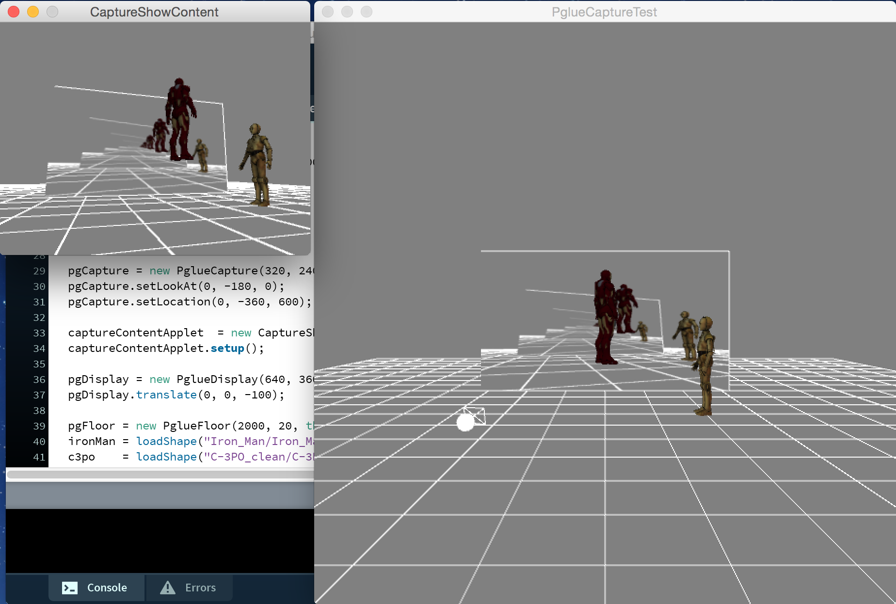
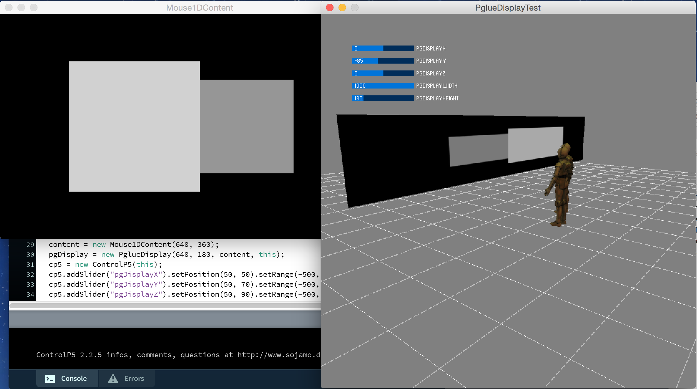

Processinglue
A library by Yasuto Nakanishi for the Processing programming environment.
Last update, 03/11/2016.
Processinglue is a package for simulating how an interactive system developed with Processing runs in a virtual space, and is a successor of Citycompiler.
Virtual display and virtual camera for PApplet that runs within another PApplet, thus this library enables a spatial simulation of Processing installation using a large display or a large screen.
It is possible to sketch or prototype interactive system with various sizes or locations of displays. This enables to take PApplet out from small display world and help to exhibit Processing installation.
You might develop different shapes of virtual display with developing a sub class of PglueDisplay. A virtual projector can be also developed based on shadow mapping.
Download
Download Processinglue version 1.0.0 in .zip format.
Installation
Unzip and put the extracted Processinglue folder into the libraries folder of your Processing sketches. Reference and examples are included in the Processinglue folder.
Keywords. Simulation, Installation
Reference. Have a look at the javadoc reference here. A copy of the reference is included in the .zip as well.
Source. The source code of Processinglue is available at GitHub, and its repository can be browsed here.
Examples
Find a list of examples in the current distribution of Processinglue, or have a look at them by following the links below.
- PglueCaptureTest:a virtual camera and a virtual display example
- PglueDisplayTest: a virtual display example
Examples on CityCompier are on https://vimeo.com/groups/166800.
Tested
Platform osx,windows
Processing 3.0
Dependencies None
An installation simulation of a large display showing a PApplet and a virtual flying camera infront of the virtual display 
An installation simulation of a large display showing a PApplet 